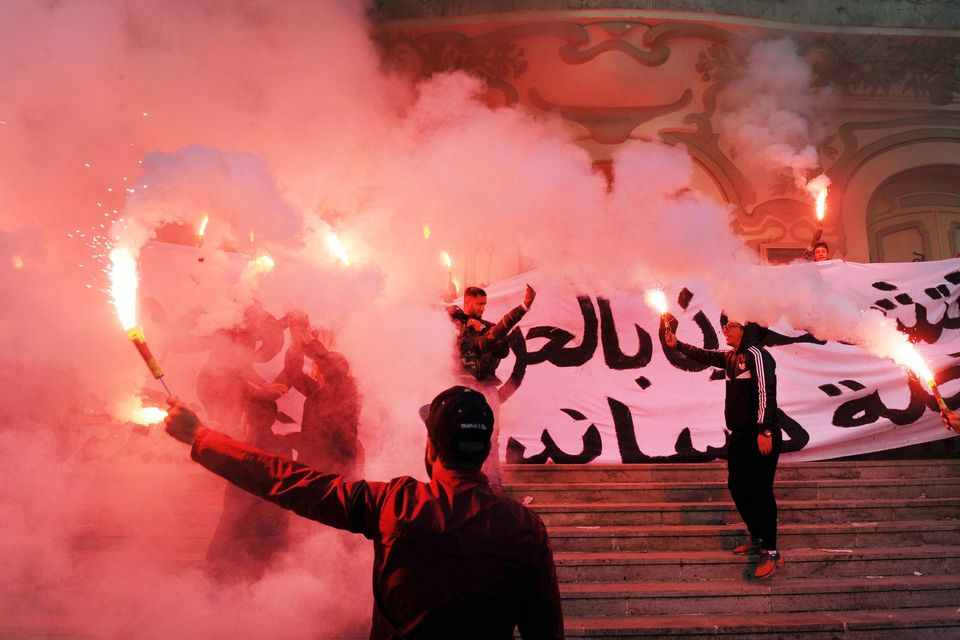
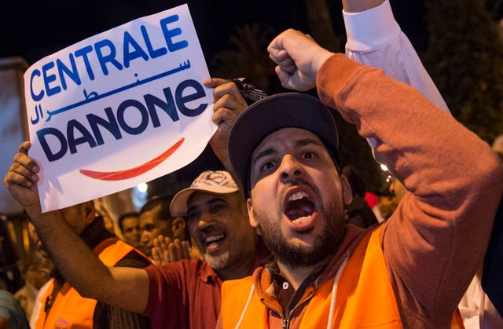
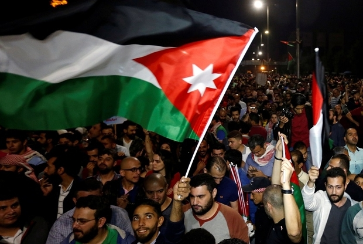
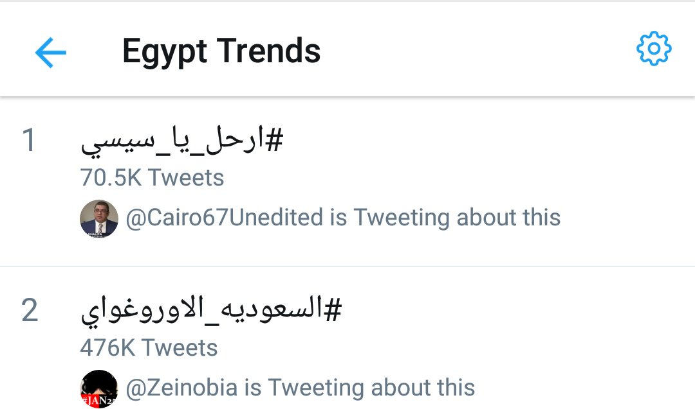

Après 2011, dans les pays arabes ayant contracté un prêt auprès du Fonds monétaire international, divers mouvements ont émergé en contestation des mesures d'austérité subies en contrepartie.
[...] En pleine contestation contre l’austérité, l’opposition a organisé dimanche une mobilisation assez peu suivie. La veille, le gouvernement avait tenté de calmer la protestation avec l’annonce d’une série de mesures sociales.
Après plusieurs semaines de mutisme, le gouvernement marocain, aux prises entre ses intérêts propres et les attentes du peuple, peine à régir face à une mobilisation d'une portée jamais vue dans l'histoire du pays. Entre partisans du boycott et protecteurs des biens économiques, le pouvoir va devoir trancher.
Alors que les prix s’envolent et que les salaires stagnent, les Jordaniens veulent que le gouvernement les aide – sans quoi ils continueront à manifester
Le hashtag #ارحل_يا_سيسي (Sissi, va-t'en !) est en trending topic en #Égypte. Hausses des prix, corruption, injustices, répression aveugle, violences policières... sont les principaux griefs des opposants (au lendemain de la défaite à la #WorldCup)
Sons du printemps arabe de 2011
En début d’année, en réaction à la loi de finances 2018 qui instaurait entre autres une hausse des prix et des impôts, les militants du mouvement « Fech Nestanew » (« Qu’est-ce qu’on attend ? ») initièrent un mouvement de contestation qui prit de l’ampleur dans toute la Tunisie. Près d’un millier de personnes furent arrêtées et le président de la république, Béji Caïd Essebssi, annonça une série de mesures, comme une augmentation de l’allocation attribuée aux familles défavorisées, afin de contenir le mouvement. Le 5 juillet, les activistes de Fech Nestanew (« Qu’est-ce qu’on attend ? ») déclarèrent l’ouverture du « 2ème round » de leur campagne.
Lancée le 20 avril sur les réseaux sociaux, la campagne de boycott visant les produits de consommation des trois grandes compagnies Sidi Ali, Danone et Afriquia, ne faiblit pas au Maroc. Le mouvement de boycott conteste le coût trop cher de la vie, et accuse ces trois compagnies en particulier d’augmenter leurs prix excessivement, leur reprochant aussi leur collusion avec le pouvoir. Les stations d’essence Afriquia sont par exemple dirigées par le milliardaire Aziz Akhannouch, aussi ministre de l’Agriculture et proche du roi.
Le boycott continua de prendre de l’ampleur à la suite de la publication à la mi-mai d’un rapport parlementaire estimant que les importateurs de carburants avaient fortement augmenté leurs marges depuis la libéralisation des prix en 2015 et la fin du système de compensation. Pris au dépourvu par l’ampleur du mouvement, le gouvernement et les entreprises peinent à trouver une réponse adéquate.
Le 30 mai, les syndicats jordaniens appelèrent à une grève générale en protestation contre le projet de loi relatif à l’impôt sur le revenu. Ce projet prévoyait entre autres une augmentation des impôts pour les entreprises et l’élargissement de l’assiette fiscale, les ménages les plus pauvres devenant imposables.
Le lendemain, ce fut l’annonce par le gouvernement d’une augmentation de plus de 20% des prix de l’électricité qui raviva la colère des manifestants. Le roi ordonna alors le report de cette dernière mesure, et pendant une semaine, les rassemblements dans plusieurs villes du pays mobilisèrent des milliers de manifestants jusqu’à la démission du Premier Ministre Hani Moulki, le 4 juin et le retrait du projet de loi le 7 juin.
Temporisation ou réelle révision de la loi ? Début juillet, le vice-premier ministre déclara : « Nous ne pouvons pas faire de marche arrière sur les réformes fiscales. Nous sommes engagés. »
Les Egyptiens subissent de nombreuses hausses de prix depuis les signatures d’accords de prêt avec le Fonds monétaire international. Sous la présidence d’Abdel Fattah al-Sissi, on compte par exemple quatre hausses du prix de l’essence, dont la dernière en Juin 2018 de plus de 60%.
Dans un contexte politique fermé où la répression se fait de plus en plus dure, on ne voit émerger ni manifestation ni boycott d’ampleur nationale, mais de plus en plus d’émeutes spontanées, notamment aux points de distributions de vivres essentiels.
Mis en place un an après les réductions, le programme d’aide financière Takaful wa Karawa ne s’adresse en 2018 qu’à 10% des Egyptiens alors que le taux de pauvreté est d’au moins de 28% en 2015, avant les coupes drastiques, selon les chiffres officiels du gouvernement qui ne publie plus de statistiques sur la pauvreté depuis.
Images :
Image de couverture : Manifestation contre le FMI en Égypte, Août 2012 : Gigi Ibrahim (c) CC BY 2.0
Logo Middle East Eye : (c) TheKreative CC BY-SA 4.0
Sons :
Passer la souris sur le texte pour trouver des ressources complémentaires
Boutons de chapitre : (c) Cobey Potter, sur CodePen
Template : Inspiration The Washington Post